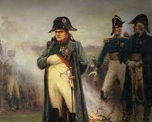
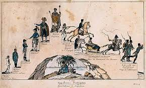
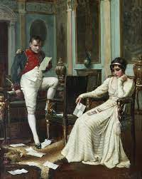
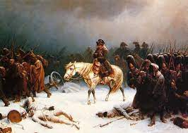
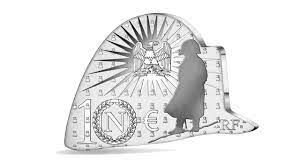

Napoleon
L'Ascension Épique de Napoléon
Le mythe entourant Napoléon Bonaparte débute par son
impressionnante ascension, élevant un simple officier de l'armée
révolutionnaire au statut d'empereur des Français. Sa vision
audacieuse, son génie militaire exceptionnel et son charisme
magnétique ont façonné une légende transcendant les frontières
françaises.
Conquêtes Impériales
Napoléon a conquis une grande partie de l'Europe, laissant une
empreinte indélébile sur la carte géopolitique de son époque. Ses
campagnes militaires audacieuses ont contribué à cimenter son
statut de leader incontesté et ont alimenté le récit héroïque qui
entoure sa personne.
Les Affaires du Cœur
Le mythe de Napoléon inclut une dimension romantique avec sa
relation passionnée avec Joséphine de Beauharnais, son épouse
bien-aimée. Cette histoire d'amour tragique ajoute une nuance
émotionnelle à la saga de l'Empereur.
Triomphes Éphémères et Défaites Poignantes
De son exil sur l'île d'Elbe à son retour triomphant pour les
Cent-Jours, puis sa défaite décisive à Waterloo, chaque étape de
la vie de Napoléon a contribué à façonner un récit captivant. Ses
moments de gloire éphémère et de défaites poignantes ont alimenté
la mythologie entourant cet homme complexe.
L'Héritage Durable
Le mythe de Napoléon perdure à travers son héritage
institutionnel, notamment le Code Napoléon qui a influencé le
droit civil dans de nombreuses sociétés. Sa vie et son impact
continuent d'inspirer des débats et des interprétations variées,
faisant de Napoléon une figure immortelle de l'histoire.





Pantheon
L'Origine Céleste du Panthéon
Le mythe du Panthéon prend racine dans l'antiquité, émergeant de
récits qui dépeignent la création de ce lieu sacré. Ce sanctuaire
transcendant, où les dieux et déesses prennent résidence, est le
théâtre d'histoires captivantes et d'événements divins.
Les Divinités Immortelles
Au cœur du Panthéon résident des divinités immortelles, chacune
dotée de pouvoirs uniques et liée à des aspects spécifiques de la
vie et de l'univers. Ces dieux et déesses forment un panthéon
diversifié, façonnant le monde et interagissant avec les mortels
selon des dynamiques complexes.
Les Récits Épiques
Le Panthéon est le décor d'épopées mythiques, où les dieux
s'engagent dans des aventures extraordinaires, souvent entrelacées
avec les destins des êtres humains. Ces récits épiques
transcendent le temps, capturant l'imagination des générations
successives.
Les Offrandes et les Rituels
Les mortels, respectueux des dieux, honorent le Panthéon par des
offrandes, des rituels et des cérémonies dédiés à différentes
divinités. Ces pratiques témoignent du lien entre les hommes et
les dieux, soulignant l'importance du Panthéon dans la vie
quotidienne et les événements majeurs.
Les Tragédies et les Triomphes Divins
Le Panthéon est le témoin des tragédies et des triomphes divins
qui définissent l'équilibre entre les forces célestes. Des
conflits entre dieux rivaux aux alliances inattendues, chaque
chapitre du mythe du Panthéon apporte son lot de drames et de
moments glorieux.
L'Héritage Éternel
Bien que les sociétés aient évolué au fil des siècles, le mythe du
Panthéon persiste, laissant un héritage éternel. Les récits
mythologiques continuent d'inspirer l'art, la littérature et la
spiritualité, soulignant l'impact durable de cette vision céleste
sur l'imaginaire collectif.